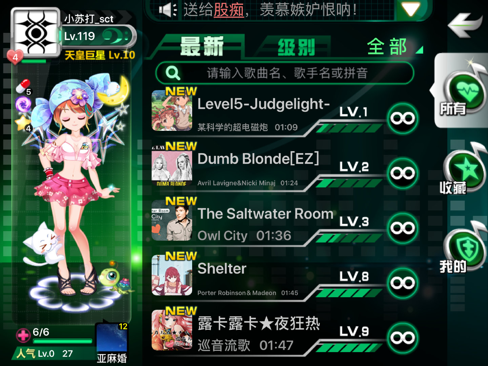
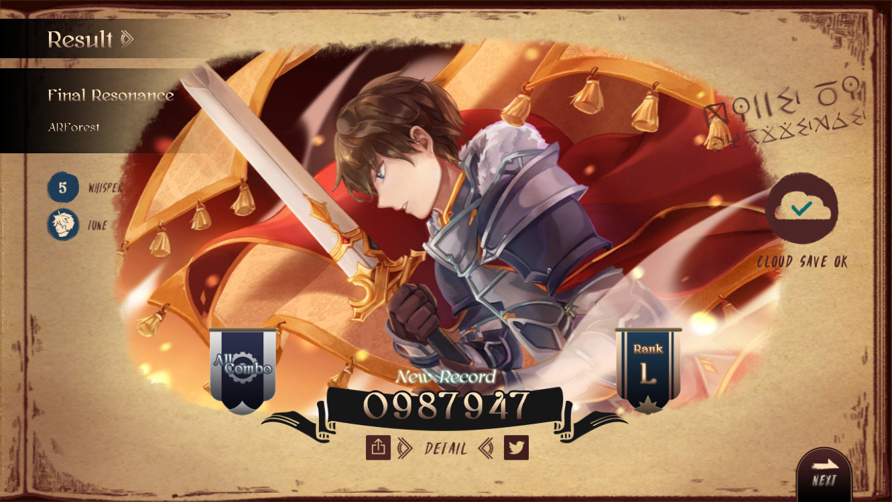
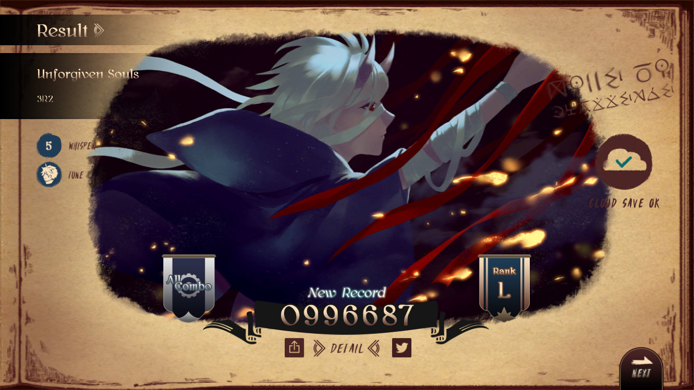
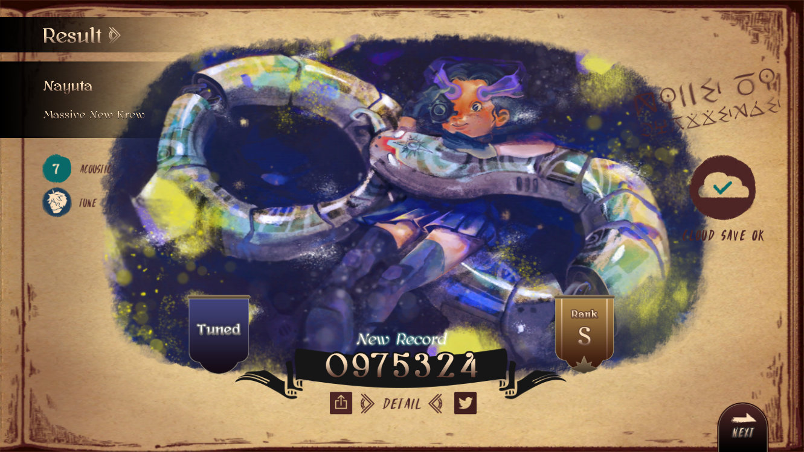
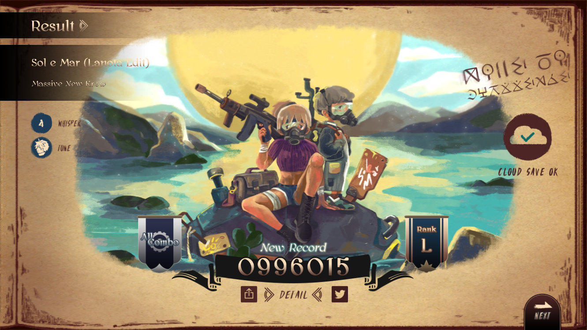
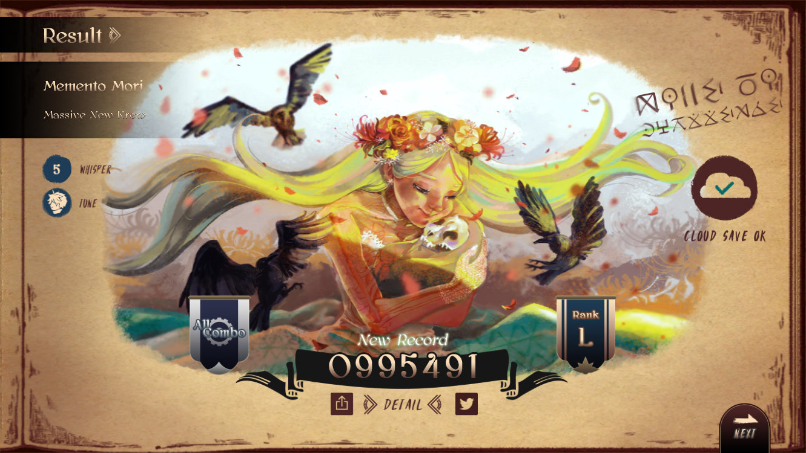
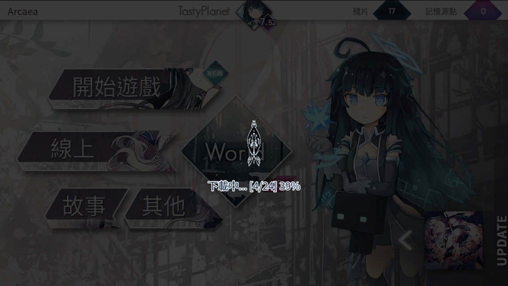
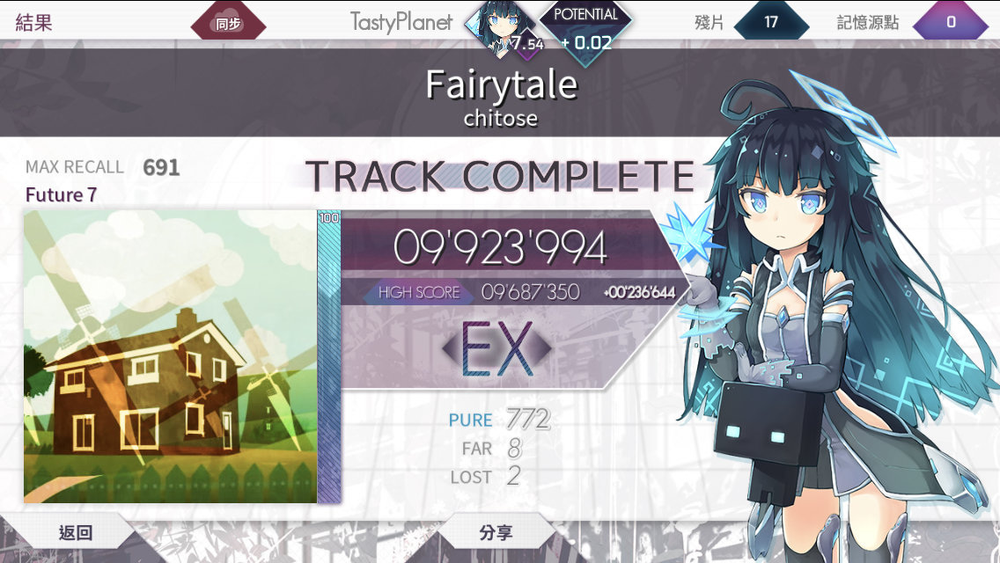

大半夜的发布新歌，
我先分享出来：
售楼小姐 - ilem feat. 洛天依
已经体会到人生的压力了(>﹏<)
今天又学会了增加背景色的功能(๑乛◡乛๑)
等(๑乛◡乛๑)
最近用有道云写日记，总有一种曾经写前端页面的既视感，每写完一段代码，就迫不及待地切回浏览器预览效果有没有生效，当然现在比过去简单好几倍，只要语法写对了，一般很少出现渲染失败的情况，回忆起自己曾经做网页的时候，不但要考虑HTML的结构，还得兼顾着CSS的权重问题，现在既不需要写那些复杂的标签，也不用考虑样式的问题，轻松简单
如果你把GitHub当做网盘用那么不要忘记公共项目中的所有内容都可以被所有人查看，比如你的私密信息等。日前就有网友将自己的服务器登录信息保存在GitHub上，然后当然会被入侵被安装挖矿软件最后变成公交车。热心网友在发现后为其安装火绒杀毒软件清理了挖矿软件，并在GitHub上提醒这名网友及时变更服务器密码。将私密数据意外发布的GitHub上并不算新鲜事，例如去年国内某知名无人机厂商就把大量私密数据给同步了。幸好首先发现这些问题的都是热心网友因此并未进行恶意行为，所以大家千万别把GitHub当做是网盘使用了~

为何a²只注意到了 公交车 0.0
晚上回到家发现一只小蜘蛛从天花板上吊着一根丝下来了，于是情不自禁地想起了那首童谣《Incy Wincy Spider》：
Incy Wincy Spider climbed up the water spout,
Down came the rain and washed the spider out.
Out came the sunshine and dried up all the rain,
And Incy Wincy spider climbed up the spout again.
当然还有动画版的视频：
Incy Wincy Spider
【音游日记】
前段时间乐动公告表示四月底关服：
顿时想起之前的新谱还没测试，不急不急，这周末就把手元视频录好，下周发布！

昨天终于通过了X-Ray-II(X光二段)~过去总是在中途因血量不足导致游戏失败
今日更新了Arcaea和Lanota，lanota也可以免费试玩咯~
今日的试玩成绩：





Arcaea也许久未登，居然可以一键下载已购入歌曲，当我单击确认的时候：

(゜-゜)? 只有24首吗？确实曲包我没怎么买，重点是右边的下载进度，出奇的慢(⊙_⊙) 我还犹豫着到底要不要退出游戏，还好半个世纪后下载完毕，顺利地进入游戏，解锁了一首歌曲：
刷新了两首歌曲记录：

今日的游玩便到此结束~